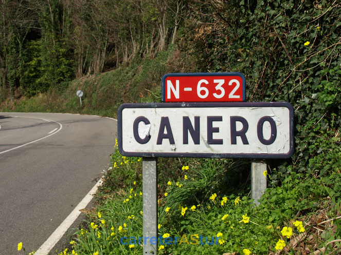

La N-632 es la carretera nacional española que discurre entre Ribadesella y Canero a lo largo de toda la costa asturiana durante 150 km, aunque sólo se mantienen catalogados 80.
Antes de la entrada en servicio de la Autovía del Cantábrico A-8 representaba la alternativa costera a la N-634 que discurre por toda la cornisa cantábrica pero que entre Ribadesella y Canero se adentra en el interior de las tierras asturianas.
Anterior a su instauración como carretera nacional, era una carretera de tercer orden, y que, atendiendo a sus características, se denominaba Carretera de Ribadesella a Canero.
Comparte con la N-634, la N-632a, la A-8 y una parte de la A-6 la característica de ser parte integrante de la ruta E-70 europea.
RecorridoTramo Ribadesella-Gijon
El inicio de la N-632 se produce en una rotonda de enlace con la N-634 en la localidad de Llovio, en el concejo de Ribadesella.
Antiguamente, el inicio de esta carretera nacional se ubicaba en el mismo puente sobre el río, en Ribadesella.
Cruza el río Sella y, a través de un trazado sinuoso, atraviesa los concejos de Caravia, Colunga y Villaviciosa, para alcanzar Gijón.
Tramo Gijon-Aviles
Parte de este tramo se encuentra transferido a la administración del Principado de Asturias, que ha cambiado su denominación a AS-19.
La carretera pierde su nombre en la entrada a Gijón desde el Alto del Infanzón, siendo actualmente vías urbanas, y ya que desde Puente Seco se denomina GJ-10 y AS-19. Recupera la denominación de N-632 en la intersección que la une con la salida de la AI-81 ya en las conurbaciones de Avilés.
Sirve como eje de comunicación entre los puertos pesqueros de Avilés y Gijón y de toda su industria asociada: las dos factorías de Arcelor, Tabaza y Veriña; Cementos Tudela - Veguin, Central térmica de Aboño, Alcoa - Inespal, Asturiana de Zinc...
Además de por los concejos de Gijón y Avilés, este tramo discurre también por Carreño y Corvera de Asturias.
Tramo Aviles-Vegarrozadas
El trazado original de este tramo atraviesa el núcleo urbano de Avilés, y alcanza el concejo de Castrillón por la localidad de Raíces Nuevo. Posteriormente, tras pasar por Salinas y Piedras Blancas, llega hasta Vegarrozadas.
En la segunda mitad de 1991, se construyó lo que en la comarca se conoce como "Variante de Avilés", un ramal que desde la autopista A-8 hoy AI-81, llegaba a Vegarrozadas sin atravesar ninguno de los núcleos urbanos antes comentados. Este ramal se denomina ahora N-632 pasando a denominarse el antiguo trazado como N-632a. Sin embargo, esta obra presenta diversos problemas, que se han traducido en una gran siniestralidad. Además de altos niveles de tráfico, curvas pronunciadas, y señalización e iluminación insuficientes, esta peligrosidad se acentuaba con la disposición de los ramales.
Por un lado, los ramales de Los Canapés y de Vegarrozadas no cuentan con todas las conexiones disponibles, mientras que el ramal de Los Canapés no cuenta con salida desde Oviedo, ni con entrada hacia Castrillón.
En cambio, para el ramal de Vegarrozadas —que no contaba con salida hacia Oviedo— se solucionó el problema con una glorieta (rotonda) que parte la N-632 en dos, y donde actualmente se unen la A-8 y ambas nacionales para todas las direcciones.
En sus inicios, esta variante tuvo la catalogación de Vía rápida, por no disponer de cruces al mismo nivel en todo su recorrido y únicamente contar con 3 enlaces: uno en la zona conocida como Los Canapés, en Avilés; otro en la intersección con la AS-237 que sirve como acceso a Avilés por la zona sur y El Corte Inglés de Avilés; y otro que conecta con el antiguo recorrido, N-632a y que da servicio a Salinas y Piedras Blancas.
Finalmente, sobre el año 2000, se tomaron cartas en el asunto. Todo el tramo, salvando el viaducto de Las Coruxas, recibió una capa de asfalto drenante, de mayor calidad y que reducía los ruidos y vibraciones. También perdió la categoría de vía rápida, y se quedó pues, como una carretera nacional convencional, se prohibió el adelantamiento en los 11 kilómetros del trayecto, salvo en los tramos de doble carril y se instauró un nuevo límite de velocidad a 80 km/h.
En 2005 se abrió al tráfico la autovía A-8 que fue construida por fuera de los núcleos urbanos y que, finalmente, ha conseguido reducir la peligrosidad manifiesta de la Variante de Avilés, la cual se había convertido en una especie de corredor mortal, a pesar de superar todos los imperativos que una carretera moderna debería cumplir, y de haberse abierto al tráfico a finales del siglo XX como vía rápida, sin acceso alguno a propiedades colindantes y cerrada por vallado en todo su recorrido; especificaciones más estrictas que las de una carretera nacional convencional.
Todo ello contribuyó a una notable mejoría en cuanto al índice de siniestralidad, de tal forma que años después volvió a recibir una limitación de velocidad a 100 km/h para, durante 2019, quedar fijado a 90 km/h para adaptarse a la nueva normativa nacional para una carretera convencional.
Además, el tramo desde el enlace con la autovía hasta el enlace con la AS-17 en Los Canapés, está restringido a ciertos vehículos pese a ser carretera convencional en la actualidad, debido a que antes de su conexión con la autovía no existe salida ni entrada alguna para ciclos y vehículos como tractores agrícolas, por ejemplo, y tampoco tiene acceso peatonal ninguno.
Tramo Vegarrozadas-Canero
Tras Vegarrozadas, prosigue su marcha hacia Soto del Barco no sin antes pasar por las cercanías del Aeropuerto de Asturias y enlazar con la carretera N-643 que da acceso al mismo.
Posteriormente, salva el Alto del Praviano y llega hasta la glorieta de Soto del Barco, famosa por las enormes retenciones que se formaban especialmente en los meses estivales debido a la conexión con la AS-16, que da servicio al suroccidente asturiano; y que constituía en el pasado un auténtico punto negro. Actualmente, con la entrada en servicio de la A-8 la circulación en este tramo ya no genera dificultades.
Durante décadas, y hasta los últimos años de construcción de la autovía, el enlace de Muros de Nalón también era un cuello de botella. Debido a la cercanía entre este punto y la glorieta de Soto del Barco, se llegaban a provocar retenciones de 10 kilómetros durante ciertas fechas estivales. Sin embargo, la apertura de la A-8 ha solventado estos problemas, así como el intenso tráfico en El Praviano, viendo que en este punto los tres carriles se quedaban ya, a toda luces, saturados.
La N-632 continúa atravesando Muros de Nalón y las cercanías de Cudillero por un nuevo trazado construido a finales de década de los 80, que permite salvar las dificultades orográficas existentes. En la década de los 90, se ha continuado con el nuevo trazado construyendo enormes viaductos que salvan el valle del río Uncín, en las inmediaciones de la Playa de la Concha y el valle del río Esqueiro sobre la playa de San Pedro de La Ribera. Parte de esta sección de nueva construcción fue aprovechada para la creación posterior de la A-8.
Todo el trazado sustituido por los viaductos mencionados, hoy bajo la denominación N-632a pasa por poblaciones como Soto de Luíña, Ballota y Cadavedo; y es un recorrido que no se había beneficiado de reformas de importancia. Por ello, discurre por un trazado más típico de una carretera de alta montaña, desde el cual se puede observar el Mar Cantábrico en varios puntos, y durante el cual hay varios estrechamientos bajo las vías del ferrocarril de Ribadeo. Es un tramo sinuoso con varias pendientes fuertes, desde el cual se pueden ver los viaductos de la carretera nacional más moderna, los cuales son parte de la A-8 en la actualidad.
Posteriormente, la carretera alcanza las dependencias del municipio de Valdés, donde se encuentra la localidad de Canero, lugar donde se reencuentra con la N-634 y pone fin a su recorrido.
La N-632 y la autovia A-8
Actualmente, la Autovía del Cantábrico, A-8, presenta un recorrido paralelo a la N-632 entre Ribadesella y Las Dueñas (Cudillero), absorbiendo consecuentemente gran parte de su tráfico previo.
A partir de allí, la práctica totalidad del recorrido hasta Canero ha sido muy provechosa para la construcción de la A-8, ya que esta autovía ha podido aprovechar su trazado. Así, el resto del tramo tiene la ventaja de que una de sus calzadas, si bien mejorada, es la que se había abierto a finales de los años 80 como la nueva N-632.
Tan sólo el trazado entre Cadavedo y el enlace de Querúas ha sido construido de manera enteramente nueva.
También cabe destacar que se ha necesitado de la construcción de nuevos viaductos paralelos en ciertos puntos, para no sobresaturarlos durante las obras ni sobrecargar sus estructuras de manera innecesaria.
La carretera alternativa al tramo desde Las Dueñas a Canero tras esta actualización es la primitiva N-632a que continúa, así, plenamente operativa.
 como la nueva N-632.
Tan sólo el trazado entre Cadavedo y el enlace de Querúas ha sido construido de manera enteramente nueva.
También cabe destacar que se ha necesitado de la construcción de nuevos viaductos paralelos en ciertos puntos, para no sobresaturarlos durante las obras ni sobrecargar sus estructuras de manera innecesaria.
La carretera alternativa al tramo desde Las Dueñas a Canero tras esta actualización es la primitiva N-632a que continúa, así, plenamente operativa.
como la nueva N-632.
Tan sólo el trazado entre Cadavedo y el enlace de Querúas ha sido construido de manera enteramente nueva.
También cabe destacar que se ha necesitado de la construcción de nuevos viaductos paralelos en ciertos puntos, para no sobresaturarlos durante las obras ni sobrecargar sus estructuras de manera innecesaria.
La carretera alternativa al tramo desde Las Dueñas a Canero tras esta actualización es la primitiva N-632a que continúa, así, plenamente operativa.